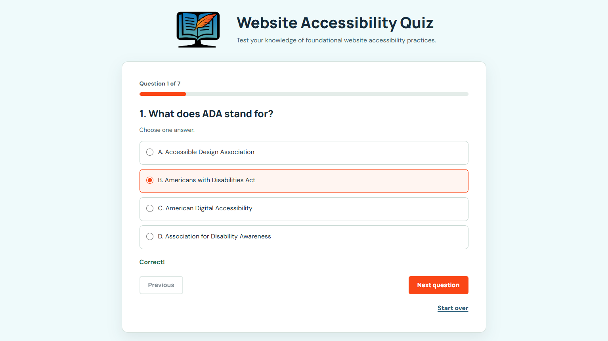

Academic Project · Interactive Learning
Website Accessibility Quiz
A seven-question interactive quiz introducing foundational concepts in website accessibility. The project began as a customization of an existing JavaScript quiz template and was later redesigned as an accessible, standalone learning activity.
Project Overview
This project involved customizing an existing interactive multiple-choice quiz to create a short learning activity about website accessibility. I developed seven questions covering topics such as the Americans with Disabilities Act (ADA), accessibility responsibilities, screen readers, alternative text, accessible color choices, moving and flashing content, and the importance of considering accessibility throughout the design and development process.
After completing the original assignment, I revisited the project and refined both its appearance and functionality. The result is a second version that keeps the original subject matter while providing a more usable, accessible, and visually cohesive experience.

Original Interactive Quiz
I began with a preexisting JavaScript multiple-choice quiz template provided for the assignment. I updated the question and answer arrays, revised the answer key, and reduced the activity to seven questions focused on website accessibility. I also made several minor layout adjustments, including changing the spacing and sizing of the quiz elements, repositioning the feedback area, and updating the page title and completion message.
To personalize the design, I added a background image and incorporated the multimedia design logo I created for Project 1. The original template's answer selector, immediate feedback, previous and next controls, restart option, and cheat mode were retained.
The original quiz script was adapted from a free resource provided by JavaScript Kit.

Redesigned Interactive Quiz
For the portfolio version, I redesigned the quiz to better reflect the visual style of my portfolio while giving it its own identity as a standalone learning activity. I replaced the original watercolor background with a flat, pale teal background and carried over the portfolio's typography and color palette. The Project 1 logo remains part of the header, and a simplified navigation link connects the quiz back to my portfolio without bringing the full portfolio menu into the activity.
I also reworked the quiz structure and interactions instead of limiting the update to visual changes. The original question display and answer dropdown were replaced with individually labelled radio-button choices. Semantic fieldset and legend elements organize each question, while visible keyboard focus indicators and live feedback improve the experience for keyboard and assistive-technology users.
Additional improvements include a question progress indicator, previous and next navigation, saved answers, a final score and results screen, and restart functionality. The page also includes a responsive layout and a light/dark theme toggle that switches between the two logo versions. The result is a self-contained quiz that can be used independently of the portfolio.
Reflection
This project gave me an opportunity to work directly with HTML, CSS, and JavaScript rather than relying on a content management system. Revisiting the original template helped me refresh my understanding of JavaScript and how its functions control an interactive page.
The redesign reinforced the importance of treating accessibility as part of the entire user experience, not simply a set of visual adjustments. Reworking the quiz structure, controls, feedback, and navigation allowed me to apply accessibility considerations more directly while improving the overall usability of the activity.